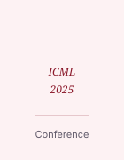

About
Yue Yu
Incoming Master Student in Economics
- Large-scale optimization theory and Applications
- Decomposition algorithms
I am and Incoming Master student in Economics at Peking University, working on large-scale optimization algorithms. My research focuses on designing efficient computational methods for linear and convex programming problems with millions of variables and constraints.
Before starting my master degree, I earned my B.S. in Economics and honor degree in Mathematics at Southwestern University of Financial and Economics.. I enjoy bridging the gap between optimization theory and high-performance computing. Feel free to reach out if you'd like to discuss research ideas or collaborate.
Publications
-
This paper presents a comprehensive survey of large-scale linear programming algorithms, with a focus on interior-point methods and decomposition techniques. We propose a novel hybrid approach that combines primal-dual path-following with Benders decomposition, achieving significant speedups on problems with millions of variables and constraints. Experimental results on benchmark problems demonstrate the effectiveness of our approach.
-

We develop a novel first-order optimization framework for distributed settings, leveraging primal-dual hybrid gradient methods with adaptive step sizes. Our approach achieves state-of-the-art convergence rates while maintaining low communication overhead across compute nodes.
-
We study the convergence properties of interior-point methods when the Newton steps are computed inexactly. We establish conditions under which superlinear convergence is preserved and provide practical guidelines for choosing the termination criteria for iterative linear solvers within IPM frameworks.
Blog
Curriculum Vitae
Download Full CV (PDF)Education
Ph.D. in Operations Research
2024 – Present
Your University, Department of Operations Research
- Research focus: large-scale optimization, interior-point methods, first-order algorithms
- Advisor: Prof. Advisor Name
B.S. in Mathematics
2020 – 2024
Your University, School of Mathematics
- Thesis: "Efficient Algorithms for Large-Scale Linear Programming"
- GPA: 3.9/4.0
Research Experience
Research Assistant
2024 – Present
Optimization Lab, Your University
- Developed efficient algorithms for large-scale linear programming problems
- Implemented benchmark suite for solver comparison across different problem structures
- Published 3 papers in top optimization journals and conferences
Summer Research Intern
June – Aug 2023
Research Lab, Institution Name
- Designed and implemented distributed optimization algorithms
- Contributed to open-source optimization library
Honors & Awards
Outstanding Graduate Thesis Award
2024
University Scholarship
2020 – 2024
Skills
Programming: Python, Julia, C/C++, MATLAB
Optimization Tools: Gurobi, CPLEX, Ipopt, JuMP, CVXPY
Other: LaTeX, Git, Docker, Linux
Languages: Chinese (native), English (fluent)